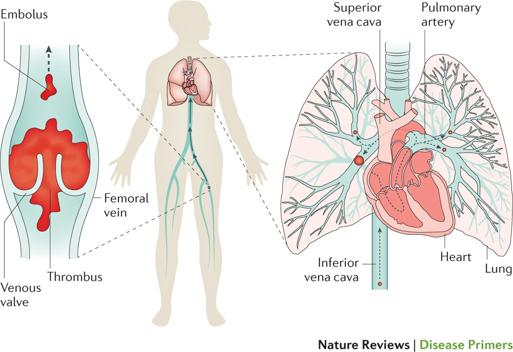
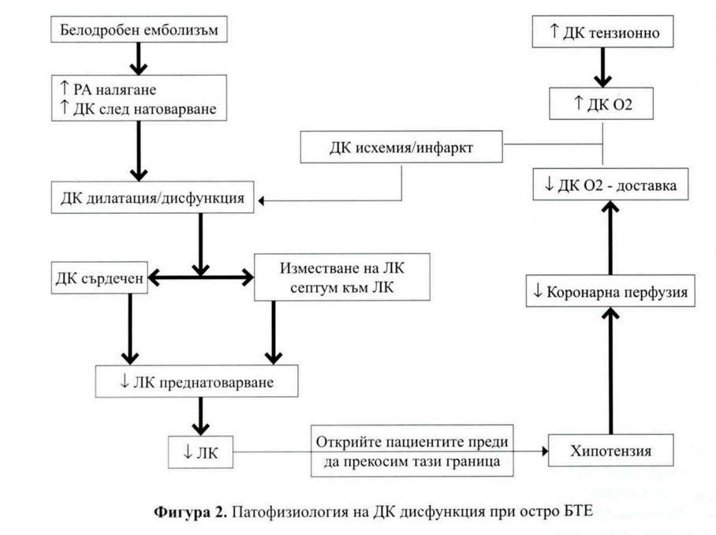
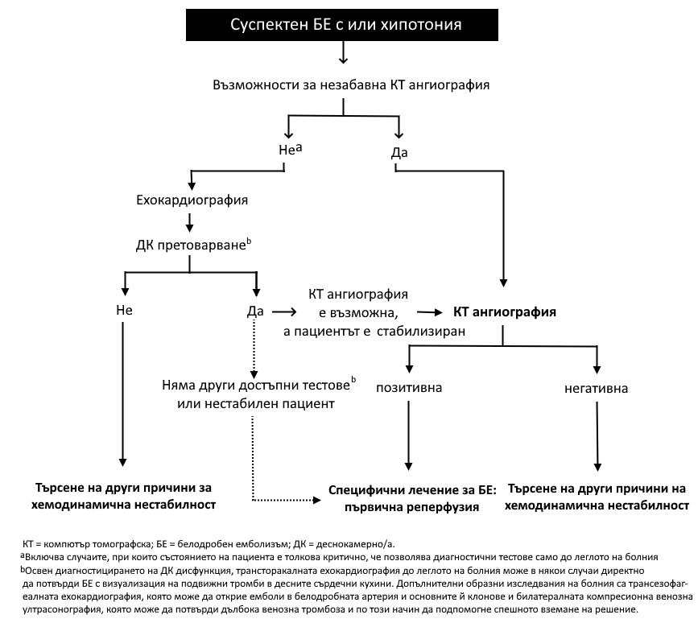
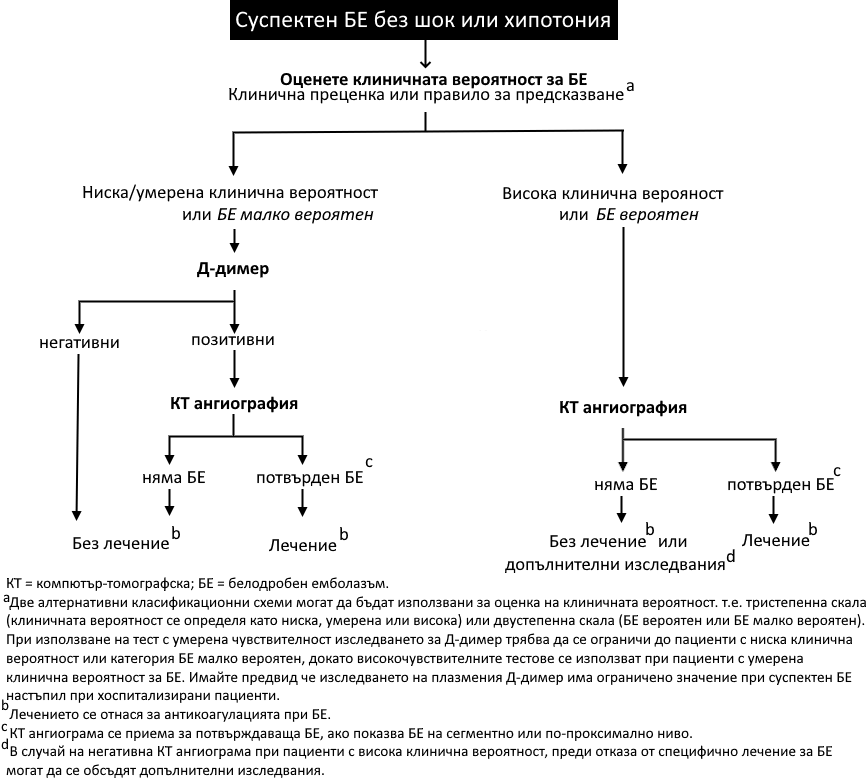

Тема 1: БТЕ – дефиниция, рискови фактори, класификация и клиника
Дефиниция и обща характеристика
Белодробният тромбемболизъм (БТЕ) представлява запушване на клон на белодробната артерия или клонове, най-често в резултат на миграция на тромби, изхождащи от дълбоките вени на долните крайници или на вените в областта на таза.
Венозният тромбоемболизъм (ВТЕ) е общо понятие, което включва дълбоката венозна тромбоза (ДВТ) и белодробния емболизъм (БЕ). Промените в белия дроб се разглеждат като етап в протичането на единен болестен процес:
- Тромбоза на периферната вена.
- Емболизация на белодробната артерия.
- Инфарциране на белодробния паренхим (в някои случаи).
Източници на емболи:
- Повече от 95% от белодробните емболии произлизат от дълбоките вени на долните крайници, най-често v. poplitea.
- Значение имат и вените на малкия таз, периутеринния и хемороидалния плексус.
- Много рядко заболяването може да се изяви като първична (автохтонна) тромбоза на белодробните артерии (в около 4.1% от случаите, често при хронични белодробни заболявания).
Острата белодробна емболия остава една от основните причини за смъртност, като при 25% от пациентите клиничната манифестация е внезапна смърт.

Рискови фактори и етиопатогенеза
Основна роля за разбирането на рисковите фактори играе Класическата триада на Вирхов, която представя основните механизми, водещи до БТЕ:
1. Триада на Вирхов
- Стаза: Наблюдава се при имобилизиране, напреднала възраст, при операция.
- Хиперкоагулация:
- Бременност, карцином, хормоно-заместителна терапия.
- Полицитемия вера, тромбоцитоза.
- Генетични дефекти (Фактор V на Лайден, Протеин С или S дефицит, мутация на фактор 8, протромбинова мутация, антитромбин III дефицит).
- Хронични белодробни заболявания, сърдечна недостатъчност, предсърдно мъждене.
- Съдово възпаление:
- Хирургия, разширени вени, тромбофлебит.
- Фрактура на долните крайници, изгаряния.
2. Придобити рискови фактори
Най-честите транзиторни или обратими рискови фактори за БТЕ са:
- Напреднала възраст.
- Продължителна имобилизация (вкл. продължително пътуване).
- Операции (особено ортопедични и коремни).
- Фрактури и тъканни травми.
- Злокачествени заболявания и химиотерапия.
- Бременност и раждане: Рискът е 5 пъти по-висок при бременни, като 66% от БТЕ настъпват след раждането.
- Употреба на естрогени (перорални контрацептиви или хормонална заместителна терапия – трикратно повишаване на риска).
- ХОББ и сърдечна декомпенсация.
- Тютюнопушене (независим рисков фактор).
- Затлъстяване.
- Наличие на постоянен катетър или протезни повърхности.
- Други състояния: Нефротичен синдром, болест на Бюргер, синдром на Бехчет, възпалителна болест на дебелото черво, лупусен антикоагулант.
Съществува и специфична ситуация, наречена "Тоалетен синдром" – остра белодробна емболия, проявяваща се по време на дефекация поради изпълнение на Валсалва маньовър, който повишава налягането и улеснява откъсването на венозен тромб.
3. Унаследени рискови фактори (Тромбофилии)
Свързани са със състояние на хиперкоагулабилност. Индивиди, носещи повече от един рисков фактор, са с по-висок риск. Най-честите генетични аномалии включват:
- Дефицит на антитромбин III, протеин С, протеин S.
- Фактор V Leiden (резистентност към активиран протеин С).
- Протромбин 20210А мутация.
- Повишени нива на хомоцистеин (хиперхомоцистеинемия).
Патофизиология
Най-често източник на пулмоналните емболи са дълбоките вени на долните крайници и таза. Тромбите се откъсват от тези вени, емболизират белодробните артерии и причиняват промени в хемодинамиката и газовата обмяна.
Промени в хемодинамиката
Определят се от размера на ембола, кардиопулмоналния статус и компенсаторните адаптации. Острият БТЕ води до:
- Анатомична обструкция на съда.
- Освобождаване на пулмонални артериални вазоконстриктори, които водят до увеличение на пулмоналното съдово съпротивление и дяснокамерно (ДК) следнатоварване.
- Внезапното увеличаване на ДК следнатоварване може да предизвика ДК дилатация и хипокинезия, трикуспидална регургитация и накрая ДК недостатъчност.
- Намалененият ДК дебит и изместването на междукамерната преграда наляво в диастола затруднява левокамерното пълнене.
- Бърза прогресия до системна артериална хипотензия и сърдечен арест.
- Намаленото системно артериално налягане води до намалена коронарна перфузия и намалена доставка на кислород до деснокамерния миокард.
Промени в газовата обмяна
Механизмите, водещи до влошаване на газовата обмяна, включват:
- Нарушено отношение вентилация/перфузия.
- Увеличение на мъртвото пространство за сметка на алвеоларното мъртво пространство (зоната периферно от емболията се вентилира, но не получава функционален кръвоток).
- Дясно-ляв шънт:
- (а) интрапулмонален шънт (отваряне на артерио-венозни анастомози);
- (б) интракардиален шънт (отваряне на foramen ovale при масивен БТЕ).
- Редуцирано кислородно насищане в смесената венозна кръв.
Артериалната хипоксемия и увеличеният алвеоларно-артериален градиент [(A-a)pO2] са двете най-важни нарушения на газовата обмяна.
Хипервентилацията може да допринесе за развитието на хипокапния и респираторна алкалоза.
Белодробен инфаркт се среща рядко, тъй като са налице три източника на кислород (клонове на белодробната артерия, бронхиална артерия и дихателните пътища). Необходимо е да бъдат нарушени 2 от тези 3 източника на кислород, за да се достигне до белодробен инфаркт. Инфаркт е по-вероятно да се получи при пациенти със съществуваща левокамерна недостатъчност или белодробно заболяване.

Класификация
Белодробният тромбемболизъм се класифицира по няколко критерия, които са важни за терапевтичното поведение и прогнозата.
1. Според клиничния риск (Тежест на острия БЕ)
Тази класификация се базира на риска от ранна смърт (вътреболнична или 30-дневна) и клиничния статус:
- Високорисков БТЕ: Подозира се или се потвърждава при наличие на клинична нестабилност (шок или хипотония).
- Невисокорисков БТЕ: При отсъствие на клинична нестабилност.
Дефиниция за клинична нестабилност:
- Необходимост от кардиопулмонална ресусцитация.
- Обструктивен шок: Систолно АН < 90 mmHg или нужда от вазопресори за поддържане на АН ≥ 90 mmHg, въпреки адекватно обемно заместване, придружено от белези на хипоперфузия (
влошен психичен статус; студена, лепкава кожа; олигурия/анурия; увеличен серумен лактат
). - Персистираща хипотензия: Систолно АН < 90 mmHg или спад с ≥ 40 mmHg за повече от 15 минути
, което не е причинено от новопоявила се аритмия, хиповолемия или сепсис.
2. Според големината на ембола
- Масивен БТЕ:
- Субмасивен БТЕ:
- Пациенти с хемодинамична стабилност (без хипотония), но с ехокардиографски признаци на дяснокамерна хипокинезия или дилатация (остро ДК обременяване).
- Немасивен БТЕ:
3. Според начина на протичане
- Остър БТЕ.
- Рецидивиращ БТЕ (хроничен): Свързва се с несвоевременно диагностициране или персистиращ източник (често неоплазми).
- Хронично рецидивираща микроемболична БТЕ: Най-трудна за диагноза. Характеризира се с развитие на хронично белодробно сърце, неясно начало, уморяемост и задух.
4. Работна класификация за ежедневната практика
А. Кардиална форма:
- Остра
- Подостра
- Хронична
Б. Белодробна форма:
- Обикновена белодробна:
- Микротромбемболична
В. Хронична рецидивираща форма:
- Рецидивираща инфарктна
- Рецидивираща микротромбемболична
Клинична картина
Клиниката се определя от формата на емболизма, големината на тромба, възрастта на болния и придружаващите заболявания. В 90% от случаите съмнението възниква при наличие на диспнея, гръдна болка или синкоп.
Основни симптоми и признаци
Типичната тетрада включва:
- Тахипнея
- Диспнея
- Тахикардия
- Хипотония
Към тях често се добавят гръдна болка и хемоптиза (кръвохрачене).
Клинични форми на протичане
Острият БТЕ обикновено се представя по четири главни начина:
- Пулмонален синдром: Типична плеврална болка със или без хемоптиза; възможна е поява на локални признаци като плеврално триене.
- Изолирана диспнея: Остра диспнея без кръвохрак или циркулаторна нестабилност, но при пациент с рискови фактори.
- Хемодинамична нестабилност (Циркулаторен колапс): Хипотензия, която може да е съпроводена със синкоп. Дължи се на централен масивен БЕ, водещ до дясна сърдечна недостатъчност.
- Хемодинамична нестабилност при лош резерв: Малки емболи могат да бъдат катастрофални при възрастни пациенти с ограничен кардиореспираторен резерв.
Специфика на отделните форми
1. Кардиална форма на БТЕ
- Остро протичане:
- В 70-80% смъртта настъпва моментално или до няколко часа.
- Симптоми: Мълниеносно развиващ се тежък задух, студена пот, прекордиална болка (наподобяваща стенокардия), гадене,
смъртен страх
. - Обективно: Изразена цианоза, тахипнея, конвулсии, разширени шийни вени (десностранен застой), кръвохрак.
При палпация: Филиформен пулс, студени крайници, увеличен и болезнен хепар, тромбофлебит или флеботромбоза.
При перкусия/аускултация: Разширена дясна сърдечна граница с акцентиран II тон на белодробната артерия, галопен ритъм, бронхоспазъм, хъркащи, мъркащи хрипове и плеврален излив.
Болка в гърдите (52-86%): Свързана с функционална коронарна недостатъчност, остро разширение устието на белодробната артерия, исхемия на белодробната тъкан.
- Церебрален синдром:
Свързан с мозъчна хипоксична енцефалопатия – психомоторно възбуждение, менингиална симптоматика, епилепсия, полиневрити.
- Абдоминален синдром:
Коремна болка, дължаща се на остро разтягане на глисоновата капсула на черния дроб и рефлекторно нарушение на мезентериалното кръвообращение.
- Подостро и хронично протичане:
Подостро: Няколко седмици без изразена симптоматика, завършва фатално поради деснокамерна сърдечна недостатъчност.
Хронично: Свързано с голям тромб с прогресивно увеличаване на размерите. Налице е пристъпно изявена клиника на плеврална болка, задух, тахикардия, бронхо-обструкция. Смъртта настъпва от развитие на белодробна хипертония и деснокамерна недостатъчност.
2. Белодробна форма на БТЕ
Клиниката е вариабилна и по-малко драматична от кардиалната форма.
- Безинфарктна форма:
- Липсват симптоми на изразена сърдечна и белодробна недостатъчност.
- Може да има лека болка, тахикардия, кашлица или преходна хипотония.
- Инфарктна форма:
- Болка: Внезапна, локализирана в съответната гръдна половина (не зад гръдната кост).
- Задух: Наблюдава се в 80-90% от случаите, обикновено без ортопнея.
Други симптоми: Кашлица, тахикардия, цианоза, кръвохрак в 10-56%, повишена температура.
- Физикално: Могат да се чуят влажни хрипове и да се установят данни за плеврален излив.
Подозиране на БТЕ: При необяснимо температурно състояние при болни на постелен режим, при внезапен задух с неясна генеза, внезапна аритмия при преминаване от постелен към нормален режим.
3. Микротромбемболична форма
- Трудна за диагностика.
- Характеризира се с хронично белодробно сърце, "светлеещ" бял дроб на рентген.
- Симптоми: неясно начало, синкопи, световъртеж, уморяемост, задух при усилие.
Прогноза
- Смъртността, асоциирана с БТЕ, е подценена.
- Тя надхвърля 15% в първите 3 месеца след поставяне на диагнозата.
- При 25% от пациентите клиничната манифестация на БТЕ е внезапната смърт.
- Острата белодробна емболия остава една от основните причини за смъртност.
Тема 2: БТЕ – диагностичен алгоритъм и лечение на масивната форма
Дефиниция и характеристика на масивната форма
Масивният белодробен тромбемболизъм (БТЕ) се класифицира като високорисков и се характеризира с наличието на клинична нестабилност. Това е състояние, свързано с висок риск от ранна смърт.
Основни характеристики на масивната форма:
- Клинична изява: Протича с шок и/или хипотония.
- Дефиниция на хипотония: Систолно артериално налягане < 90 mmHg или спад в налягането с ≥ 40 mmHg за > 15 минути, който не е причинен от нововъзникнала аритмия, хиповолемия или сепсис.
- Хемодинамика: Води до остра дясна сърдечна недостатъчност.
- Риск: Масивният БТЕ е една от причините за внезапна сърдечна смърт.
Клиничната нестабилност включва:
- Необходимост от кардиопулмонална ресусцитация.
- Обструктивен шок: Систолно АН < 90 mmHg или нужда от вазопресори за поддържане на АН ≥ 90 mmHg въпреки адекватно обемно заместване, придружено от белези на хипоперфузия (олигурия, влошен ментален статус, лактат).
- Персистираща хипотензия.
Диагностични методи и изследвания
Диагнозата се поставя въз основа на анамнестичните данни, физикалното, лабораторното изследване, данните от ЕКГ, рентгеновото и сцинтиграфското изследване. В 90% съмнението възниква от клинични симптоми като диспнея, болки в гърдите или синкоп.
1. Лабораторни изследвания
1. Лабораторни изследвания: Д-димер
Изследването на Д-димер заема централно място в диагностичния процес, особено за изключване на заболяването.
- Механизъм: Д-димерът се образува при лизиране на прекръстосан фибрин от плазмина. Той представлява директен маркер за фибринолитична активност и индиректен маркер за тромбообразуване.
- Чувствителност и Специфичност:
- Диагностичните тестове имат висока чувствителност (над 90%).
- Специфичността е ниска. Повишението на Д-димера е неспецифично и се установява при редица други състояния: възпаление, тумори, напреднала възраст, постоперативно състояние, бременност и др.
- Поради това позитивният резултат има ниска позитивна предиктивна стойност (т.е. високият Д-димер не доказва задължително БТЕ).
- Клинично значение (Изключване на БТЕ):
- Основната стойност на теста е в неговата висока негативна предиктивна стойност.
- Негативният резултат (< 500 ng/ml) може да изключи БТЕ с висока сигурност при пациенти с ниска или междинна клинична вероятност.
- Това позволява да се идентифицират пациенти, които нямат нужда от лечение и допълнителни образни изследвания.
2. Други лабораторни показатели
3. Електрокардиография (ЕКГ)
При остър масивен БТЕ ЕКГ показва белези на дяснокамерно обременяване и промяна на електрическата ос надясно:
 4. Ехокардиография (ЕхоКГ)
4. Ехокардиография (ЕхоКГ)
Ехокардиографията е критична при хемодинамично нестабилни пациенти (масивна форма). Тя може да се извърши до леглото на болния и да определи терапевтичното поведение.
- Индиректни признаци (ДК обременяване):
- Дяснокамерна дисфункция и дилатация.
- Повишено систолно налягане в белодробната артерия.
- Повишена скорост на трикуспидалната регургитация (> 3.0-3.5 m/sec).
- Дилатирана долна празна вена с намален инспираторен колапс.
- Съотношение ДК/ЛК теледиастолен диаметър > 0.5.
- Директни признаци: Визуализиране на тромби в белодробната артерия или десните кухини (чрез трансезофагеална ЕхоКГ).
- Значение на ЕхоКГ при шок: Ако пациент е в шок и ЕхоКГ не показва белези на ДК обременяване, БТЕ е малко вероятна причина за хемодинамичната нестабилност.
5. Образни изследвания
1. Рентгеново изследване
- Признаци на остро белодробно сърце:
- Разширение на дясна граница на сърцето
- Разширените на конуса на белодробната артерия
- Разширена на v. cava superior.
- Нарушен кръвоток от a. pulmonalis:
- Разширени хилуси
- Симптом на олигемия - намален съдов рисунък, увеличена просветляемост на паренхима
- Огнищни сенки
- Дисковидни ателектази - едностранни или двустранни
- Белодробен инфаркт:
- Неясен инфаркт тип "гнездо"
- Клиновидно уплътнение на белодробната тъкан.
- Лобарна пневмония.
- Оток на белите дробове, тип тумор.
- Кръгли и овални сенки (3-4 cm) на сагиталните рентгенограми.
2. Спирална Компютърна Томография (сКТ) / КТ-ангиография: - Основен диагностичен метод.
- Директни белези: Пряко визуализиране на интралуминален дефект (тромб) под формата на хиподензна зона на фона на контрастирания съд. Тромбът може да е свободен или фиксиран към стената. При пълна обструкция луменът може да е нормален/дилатиран, но дистално няма контрастна материя. Метод на избор при суспектна белодробна тромбемболия е компютър-томографска ангиопулмография, комбинирана с изследване на вените на таза и долните крайници.
- Икономически изгоден метод (заедно с Д-димер тестовете).
- Срокове: Образните изследвания трябва да бъдат извършени до 1 час при масивен и до 24 часа при немасивен БТЕ.
3. Белодробна ангиография: - "Златен стандарт" (референтен метод), но е инвазивен.
Прилага се за пациенти, при които неинвазивната диагноза не носи информация.
Вероятно БТЕ с нормална ангиограма не се лекува с антикоагуланти.
4. Белодробна сцинтиграфия: - Неинвазивна и безопасна диагностична методика.
- За перфузионна диагностика венозно се инжектират макроагрегати, маркирани с 99m-технеций (Тс).
- В случаите на оклузия на разклонения на белодробната артерия, капилярната част от периферно лежащото съдово русло няма да получи такива частици, което ще доведе до “студена” зона на съответните образи.
- Класификация:
- Отхвърляне на БТЕ (нормална).
- Доказан БТЕ (висока вероятност): Минимум един сегментен перфузионен дефект или перфузионен дефект от по-висок порядък с локално нормална вентилация или нормална находка на рентгенография на гръден кош.
- Нито отхвърлен, нито доказан БТЕ (недиагностична).
5. Компресионна ултрасонография на вени
- Тъй като над 70% от пациентите с БТЕ имат дълбока венозна тромбоза (ДВТ), диагностицирането на проксимална ДВТ чрез ехография е достатъчно основание за започване на антикоагулантна терапия при суспектен БТЕ, без да се налагат допълнителни белодробни изследвания.
Диагностичен алгоритъм при Масивна форма (Високорисков БТЕ)
Алгоритъмът при пациенти със суспектен високорисков БЕ, т.е. представящи се с шок или хипотония, следва следната логика:
- Суспектен БТЕ с Шок/Хипотония:
- Първа стъпка е преценка дали може незабавно да се извърши КТ-ангиография.
- Ако КТ е възможна веднага:
- Прави се КТ-ангиография.
- Положителен резултат -> Специфично лечение за високорисков БТЕ (Тромболиза/Емболектомия).
- Отрицателен резултат -> Търсене на друга причина за шока.
- Ако КТ НЕ е възможна веднага (пациентът е твърде нестабилен):
- Извършва се Ехокардиография (до леглото на болния).
- Резултат от Ехокардиографията:
- Липса на ДК обременяване: Изключва БТЕ като причина за хемодинамичната нестабилност -> Търсене на друга причина.
- Наличие на ДК обременяване (недвусмислено):
- Ако пациентът може да се стабилизира за транспорт -> КТ-ангиография.
- Ако пациентът е силно нестабилен -> Приема се диагнозата и се започва Специфично лечение за високорисков БТЕ.

Диагноза на Дълбоката Венозна Тромбоза (ДВТ)
- Асимптомна ДВТ се наблюдава при над 70% от пациентите с доказана симптомна БТЕ.
- Диагностицирането на ДВТ с подозиран БТЕ е достатъчно доказателство за започване на антикоагулантна терапия без последващи изследвания.
- Контрастна венография: "Златен стандарт", но се прилага рядко (инвазивна и трудно осъществявана при остро болни пациенти).
- Ултрасонография: Липса на пълна компресия на вената при прилагане на налягане е добре валидизиран критерий.
Диференциална диагноза
От значение е отчитането на клиничния фон (рискови фактори за БТЕ, предшестваща стенокардия, съдов инцидент) и характерът на болката.
При БТЕ тя е остра, постоянна, без ирадиация, свързана с дишането, а при инфаркт на миокарда - вълнообразна, с ирадиация, несвързана с дишането, има акроцианоза и няма кръвохрак и плеврално триене.
От значение са и биохимичните изследвания (напр. тропонини, креатинкиназа за ИМ).
Лечение на масивната форма
Основната цел при масивния БТЕ е бързото възстановяване на белодробния кръвоток и овладяване на острата циркулаторна недостатъчност, която е водеща причина за смърт.
1. Овладяване на острата циркулаторна недостатъчност
- Кислородотерапия: Дозирана кислородотерапия през цялото време.
- Инотропни средства:
- Използват се при пациенти с нисък сърдечен индекс и нормално или ниско кръвно налягане.
- Препарати на избор: Добутамин и Допамин.
- Ефект: Водят до значимо нарастване на сърдечния индекс без значима промяна в сърдечната честота.
- Вливане на течности: Ползата е противоречива. Обемът не трябва да надхвърля 500 мл, за да не се претовари допълнително дясната камера.
2. Фибринолитична (Тромболитична) терапия
Масивният БТЕ (протичащ с шок и хипотония) е абсолютно показание за фибринолитична терапия, освен ако няма абсолютни противопоказания. Тя може да се приложи до 14-ия ден от началото на оплакванията.
Схема на приложение:
- Хепарин: Започва се с болусна доза 5 000 – 10 000 IU Нефракциониран хепарин (НФХ).
- Фибринолитик: Основен препарат е rtPA - Alteplase (Actilyse).
- Стандартна доза: 100 mg i.v. за 2 часа (10 mg болус + 90 mg инфузия).
- При сърдечен арест: Един флакон Alteplase (50 mg) i.v. струйно.
- Продължение: След тромболизата се продължава с НФХ в постоянна венозна инфузия (поне 1250 IU/h) за 5-7 дни под контрол на аРТТ (увеличаване 1,5 – 2,5 пъти).
3. Хирургично и интервенционално лечение
Тези методи се прилагат при пациенти с масивен БТЕ, които са противопоказани за тромболитично лечение или при които фибринолизата е била неефективна.
- Хирургична емболектомия: Оперативно отстраняване на ембола.
- Механична реперфузия (Катетърна терапия):
- Поставяне на катетър в белодробната артерия.
- Методи: Механична фрагментация на тромба, аспирация на тромби.
- Фармакомеханичен подход: Съчетава механична или ултразвукова фрагментация на тромба с in situ (локална) намалена доза тромболиза.
- Венозни филтри (Vena Cava Filters): Поставят се в долната празна вена при пациенти, при които антикоагулацията е контраиндицирана или има рецидивиращ БТЕ въпреки лечението.
4. Пост-терапевтично поведение
След овладяване на острото състояние се преминава към Перорална Антикоагулантна Терапия:
- Започва се възможно най-рано (първите 72 часа), застъпвайки се с хепарина.
- Използват се Антагонисти на Витамин К (Acenocumarol).
- Цел: Постигане на INR 2.0 – 3.0 в два последователни дни, след което директният антикоагулант (хепарин) се спира.
- Алтернатива: Нови перорални антикоагуланти (Rivaroxaban, Apixaban), особено при пациенти без карцином.
Профилактика
- Първичната профилактика е предпочитана.
- Вторична профилактика се запазва за пациенти, при които първичната е контраиндицирана или неефективна.
- Пациентите, подлежащи на хирургична операция се подразделят на следните рискови групи:
| Рискова група | Характеристика | Риск за развитие без профилактика | Препоръка |
| Нисък риск | Пациенти < 40 г.
без рискови фактори
обща анестезия < 30 мин
малка абдоминална или торакална операция | Проксимална ДВТ: 1,0%;
Фатална БТЕ: < 0,01%. | Не се препоръчва профилактика. |
| Среден риск | Пациенти > 40 г.
с нужда за обща анестезия > 30 мин
и имат един или повече от изброените рискови фактори
| Проксимална ДВТ: 2–10%;
Фатална БТЕ: 0,1–0,7%. | Дозиран спрямо килограмите НМХ. |
| Висок риск | Пациенти > 40 г., подлежащи на
операция за малигнено заболяване или отропедична процедура на долен крайник
с обща анестезия > 30 мин
имат инхибиторен дефицит или други рискови фактори | Проксимална ДВТ: 10–20%;
Фатална БТЕ: 1,0–5,0%. | Дозиран спрямо килограмите НМХ. |
Тема 3: БТЕ – диагностичен алгоритъм и лечение на немасивната форма
Характеристика на немасивната и субмасивната форма
Класификацията на белодробния тромбемболизъм (БТЕ) се базира на риска от ранна смърт и хемодинамичния статус на пациента. Немасивната форма се определя като невисокорисков БТЕ, тъй като при нея липсва клинична нестабилност (шок или хипотония).
1. Немасивен БТЕ
- Хемодинамика: Протича без промяна в артериалното налягане (пациентът е стабилен).
- Симптоматика: Налице са предимно респираторни симптоми (задух, тахипнея, плеврална болка), със или без инфаркт на белия дроб.
- Степен на обструкция: Оклузията е под 50% от артерия пулмоналис или засяга по-малки клонове с общ диаметър < 50%.
2. Субмасивен БТЕ
Това е специфична подгрупа от пациенти с немасивен БТЕ, които изискват повишено внимание.
- Дефиниция: Пациенти с хемодинамична стабилност (без хипотония), но с наличие на ехокардиографски признаци на дяснокамерна (ДК) хипокинезия или дилатация.
- Значение: Тези белези показват остро дяснокамерно обременяване, което може да влоши прогнозата въпреки нормалното кръвно налягане.
Диагностичен подход: Клинична оценка и Лаборатория
При пациенти без шок и хипотония (суспектен невисокорисков БЕ) диагностичната стратегия цели да идентифицира пациентите, които нямат БТЕ и съответно нямат нужда от лечение, както и да потвърди диагнозата при тези, които имат.
1. Оценка на клиничната вероятност
В 90% от случаите съмнението възниква от клинични симптоми (диспнея, гръдна болка, синкоп). Въвеждането на "оценка на клиничната вероятност" позволява правилна интерпретация на изследванията.
Оценката се базира на наличието на:
- Задух и/или тахипнея, с или без плевритен тип гръдна болка и/или хемоптое.
- Липса на друго състояние, което би могло да обясни оплакванията.
- Наличие на рискови фактори.
Вероятността се класифицира като ниска, междинна или висока.
2. Ролята на Д-димер в диагностиката
Изследването на Д-димер е крайъгълен камък в диагностичния алгоритъм на немасивната форма, особено за изключване на заболяването.
- Механизъм: Д-димерът е продукт, който се образува при лизиране на прекръстосан фибрин от плазмина. Той е директен маркер за фибринолитична активност и индиректен за тромбообразуване.
- Чувствителност и Специфичност:
- Тестовете имат висока чувствителност (над 90%). Това означава, че фалшиво отрицателните резултати са много редки.
- Специфичността е ниска. Повишение се наблюдава при множество други състояния: възпаление, тумори, напреднала възраст, бременност, постоперативни състояния. Поради това позитивният резултат има ниска предиктивна стойност (не доказва БТЕ).
- Клинично значение:
- Основната сила на теста е в неговата висока негативна предиктивна стойност.
- Отрицателен резултат (< 500 ng/ml) може да изключи БТЕ с висока сигурност при пациенти с ниска или междинна вероятност. Това спестява необходимостта от скъпи и лъчеви натоварващи изследвания (като КТ).
Образни изследвания при немасивна форма
Ако клиничната оценка и/или Д-димерът насочват към БТЕ, се преминава към образни методи за потвърждение.
1. Спирална Компютърна Томография (сКТ) / КТ-ангиография
- Основен метод: Това е метод на избор (златен стандарт в съвременната практика) за немасивни форми.
- Находка: Позволява пряко визуализиране на тромба като хиподензна зона (интралуминален дефект) в контрастирания съд.
- Комбиниран подход: Често се прави КТ-ангиопулмография, комбинирана с изследване на вените на таза и долните крайници (КТ-венография).
2. Белодробна сцинтиграфия (Вентилационно-перфузионна)
- Приложение: Неинвазивен и безопасен метод, алтернатива при противопоказания за КТ (напр. бъбречна недостатъчност, алергия към контраст).
- Критерии за диагноза:
- Висока вероятност (Доказан БТЕ): Минимум един сегментен перфузионен дефект (липса на кръвоснабдяване) при запазена вентилация в същата зона (mismatch).
- Нормална сцинтиграфия: Отхвърля БТЕ.
Диагностичен алгоритъм (Стъпка по стъпка)
Алгоритъмът при пациенти без шок или хипотония (невисокорисков БТЕ) зависи от първоначалната клинична преценка:
А. При Ниска или Междинна клинична вероятност
- Първа стъпка: Изследване на Д-димер.
- Резултат от Д-димер:
- Отрицателен (< 500 ng/ml): Изключва БТЕ. Не се налага лечение. Диагностичният процес за БТЕ приключва.
- Положителен (> 500 ng/ml): Не доказва БТЕ, но изисква потвърждение.
- Втора стъпка (при положителен Д-димер): Извършва се КТ-ангиография.
- КТ отрицателна: Няма БТЕ. Не се лекува.
- КТ положителна: Потвърден БТЕ -> Започва се лечение.
Б. При Висока клинична вероятност
- Първа стъпка: Директно КТ-ангиография.
- Забележка: При висока вероятност Д-димерът не се изследва, защото дори да е отрицателен, той не би бил достатъчно надежден да отхвърли диагнозата при толкова силни клинични данни.
- Резултат от КТ:
- КТ положителна: Потвърден БТЕ -> Лечение.
- КТ отрицателна: Ако въпреки отрицателната КТ съмнението остава много високо, може да се обсъдят допълнителни методи (напр. ангиография или сцинтиграфия), но обикновено БТЕ се отхвърля.

Диагноза на Дълбоката Венозна Тромбоза (ДВТ)
- Асимптомна ДВТ се наблюдава при над 70% от пациентите с доказана симптомна БТЕ.
- Диагностицирането на ДВТ с подозиран БТЕ е достатъчно доказателство за започване на антикоагулантна терапия без последващи изследвания.
- Контрастна венография: "Златен стандарт", но се прилага рядко (инвазивна и трудно осъществявана при остро болни пациенти).
- Ултрасонография: Липса на пълна компресия на вената при прилагане на налягане е добре валидизиран критерий.
Диференциална диагноза
От значение е отчитането на клиничния фон (рискови фактори за БТЕ, предшестваща стенокардия, съдов инцидент) и характерът на болката.
При БТЕ тя е остра, постоянна, без ирадиация, свързана с дишането, а при инфаркт на миокарда - вълнообразна, с ирадиация, несвързана с дишането, има акроцианоза и няма кръвохрак и плеврално триене.
От значение са и биохимичните изследвания (напр. тропонини, креатинкиназа за ИМ).
Лечение на немасивната форма
Терапията на немасивния БТЕ е медикаментозна (антикоагулантна). Тромболиза (фибринолиза) не се препоръчва рутинно за пациенти без хипотония, поради риск от кървене, освен в редки случаи на влошаване.
1. Начална парентерална антикоагулация
Лечението трябва да започне възможно най-бързо. Предпочитат се Нискомолекулни хепарини (НМХ) или Фондапаринукс пред Нефракционирания хепарин (НФХ), тъй като имат по-предсказуем ефект и не изискват мониториране на aPTT.
- Нискомолекулни хепарини (НМХ): Дозират се спрямо телесното тегло (подкожно).
- Nadroparin (Fraxiparine)
- Enoxaparin (Clexane)
- Dalteparin (Fragmin)
- Контрол: Препоръчва се следене на тромбоцитите поради риск от хепарин-индуцирана тромбоцитопения.
- Fondaparinux (Arixtra): Селективен инхибитор на фактора Ха. Ефективна алтернатива.
- Нефракциониран хепарин (НФХ): Използва се по-рядко при немасивни форми (освен при тежка бъбречна недостатъчност). Дозировка: болус 5 000 – 10 000 IU, последван от инфузия.
2. Перорална Антикоагулантна Терапия (ПОАТ)
Целта е продължителна профилактика на рецидивите.
А. Антагонисти на Витамин К:
- Основен препарат: Acenocumarol.
- Начало: Започва се възможно най-рано (още в първите 72 часа), едновременно с парентералния хепарин (застъпване).
- Прицелни стойности: Целта е достигане на INR между 2.0 и 3.0.
- Спиране на хепарина: Парентералният антикоагулант се спира, когато INR е в терапевтични граници (2.0–3.0) в два последователни дни.
- Внимание: При висока начална доза Sintrom има риск от парадоксален хиперкоагулационен ефект (некроза), затова е важно застъпването с хепарин.
Б. Нови перорални антикоагуланти:
- Представители: Rivaroxaban (Xarelto), Apixaban (Eliquis).
- Те са добра алтернатива на VKA. При тях може да се използва схема с начална по-висока доза, без задължително предварително лечение с хепарин (за Rivaroxaban и Apixaban) или след кратък курс хепарин (за Edoxaban).
3. Лечение при специфични групи пациенти
- Пациенти с активен карцином:
- Препоръчват се Нискомолекулни хепарини (НМХ) за продължително лечение (поне за 6 месеца). Те са по-ефективни и безопасни от Acenocoumarol при онкоболни.
- Алтернатива: Edoxaban и Rivaroxaban (освен при рак на гастро-интестиналния тракт поради риск от кървене).
- Антифосфолипиден синдром:
- Препоръчват се само Витамин К антагонисти (Acenocoumarol). Новите антикоагуланти не са показани.
4. Продължителност на лечението
Продължителността зависи от причината за емболията (рисковия фактор):
- 3 месеца: При наличие на временен/реверзибелен рисков фактор (напр. операция, травма, гипс).
- Поне 6 месеца: При идиопатичен БТЕ (неизвестна причина).
- Постоянно (доживот):
- При рецидивиращ БТЕ.
- При наличие на персистиращи рискови фактори (напр. активен рак, антифосфолипиден синдром).
Венозни филтри (Vena Cava Filters)
При немасивна форма поставянето на филтър в долната празна вена се обсъжда само в краен случай:
- Когато антикоагулацията е абсолютно противопоказана (напр. активно кървене).
- При рецидивиращ БТЕ въпреки адекватната антикоагулантна терапия.
Риск: Филтрите могат да увеличат риска от дълбока венозна тромбоза (ДВТ) в дългосрочен план.
Профилактика
- Първичната профилактика е предпочитана.
- Вторична профилактика се запазва за пациенти, при които първичната е контраиндицирана или неефективна.
- Пациентите, подлежащи на хирургична операция се подразделят на следните рискови групи:
| Рискова група | Характеристика | Риск за развитие без профилактика | Препоръка |
| Нисък риск | Пациенти < 40 г.
без рискови фактори
обща анестезия < 30 мин
малка абдоминална или торакална операция | Проксимална ДВТ: 1,0%;
Фатална БТЕ: < 0,01%. | Не се препоръчва профилактика. |
| Среден риск | Пациенти > 40 г.
с нужда за обща анестезия > 30 мин
и имат един или повече от изброените рискови фактори
| Проксимална ДВТ: 2–10%;
Фатална БТЕ: 0,1–0,7%. | Дозиран спрямо килограмите НМХ. |
| Висок риск | Пациенти > 40 г., подлежащи на
операция за малигнено заболяване или отропедична процедура на долен крайник
с обща анестезия > 30 мин
имат инхибиторен дефицит или други рискови фактори | Проксимална ДВТ: 10–20%;
Фатална БТЕ: 1,0–5,0%. | Дозиран спрямо килограмите НМХ. |
Тема 4: Рак на белия дроб – рискови фактори, морфологична класификация, клиника и диагностичен алгоритъм
Епидемиология
Според данни на СЗО, карциномът на трахеята, бронхите и белите дробове е водеща причина за смърт в Европейския регион. В България ракът на белите дробове е най-честото злокачествено заболяване при мъжете (19.3%) и пето по честота при жените. Смъртността от него надвишава тази, причинена от рак на млечната жлеза, дебелото черво и простатата, взети заедно.
Рискови фактори
Основна роля играят фактори на околната среда и генетични предиспозиции:
- Тютюнопушене: Основен рисков фактор. Рискът се увеличава с броя на цигарите и пакето-годините. Отказът от тютюнопушене на всяка възраст значително намалява риска.
- Пасивно тютюнопушене.
- Газ Радон: Продуцира се от естествения разпад на уран в почвата, скалите и водата. Навлиза в сградите чрез пукнатини в основите.
- Професионални канцерогени: Излагане на азбест, арсен, хром, никел, кадмий и петролни продукти (особено опасно при пушачи).
- Хронични белодробни заболявания: Белези от туберкулоза, хроничен бронхит, ХОББ.
- Фамилна анамнеза: Относителният риск е 2.4 пъти по-голям за индивиди с роднини с болестта (наследствен генетичен фактор при около 8% от случаите). Полиморфизми на хромозома 6 и 15 се свързват с повишен риск.
Патогенеза
Развитието е вероятно в резултат на въздействие върху бронхиалния епител на различни карциногенни вещества, активиращи реакции, които предизвикват степенни, до мутагенни процеси и неконтролируемо размножаване на атипични клетки.
Генни мутации:
- EGFR (Рецептор на епидермалния растежен фактор): Играе роля в регулирането на клетъчното размножаване, апоптозата, ангиогенезата и туморната инвазия. Генетичните мутации, водещи до дисрегулация му, обикновено се наблюдават при недребоклетъчен белодробен карцином, което обяснява използването на EGFR-инхибитори при лечението на заболяването.
- Мутация в EML4-ALK тирозинкиназа се среща в 4% от недребноклетъчните белодробни карциноми.
- Мутация в K-ras прото-онкогени е отговорна за 10-30% от белодробните аденокарциноми.
Наследствен генетичен фактор:
- Приблизително 8% от случаите, с относителен риск 2.4 пъти по-голям за индивиди с роднини с болестта.
- Полиморфизмите на хромозома 6 и 15 са свързани с повишен риск.
Класификация
1. Класификация по Локализация
Определя достъпността за диагностика (ендоскопска или перкутанна):
- Централен: Локализиран в главни, лобарни и сегментни бронхи. Достъпен е ендоскопски (чрез бронхоскопия). Може да бъде ендобронхиоларен или перибронхиоларен.
- Периферен: Разположен дистално от сегментните бронхи. Трудно се доказва ендоскопски, но е достъпен за трансторакална аспирационна биопсия (ТТАБ), тъй като често е до гръдната стена.
- Върхов (Тумор на Pancoast-Tobias): Особена форма, разположена във върха на белия дроб.

Фигура 1. Схематично представяне на топографията (десен бял дроб) и усложненията (ляв бял дроб) при белодробен карцином.
А-върхов (Панкоаст-Тобиас); В-периферен карцином; С-пневмонична форма; D-централен карцином;
1-емфизем; 2-ателектаза; 3-плеврален излив; 4-бронхиектазии.
2. Морфологична (Клинична) Класификация
Тази класификация е критична за избора на поведение и лечение.
А. Недребноклетъчен карцином (НДК)
Съставлява 75-80% от случаите на белодробен карцином.
- Плоскоклетъчен карцином:
- Аденокарцином:
Не е задължително свързан с тютюнопушенето.
- Развива се от алвеоларните и бронхиоларните жлезни клетки.
- Типично периферно разположена маса.
Може да бъде първичен белодробен или вторичен от други места, особено когато е налице инфилтрация на плеврата и последващ плеврален излив.
- Алвеоларен клетъчен карцином:
- Рядък вид. Може да причини бронхорея (обилно отделяне на спутум) и инфилтративни засенчвания.
- Други типове: Едроклетъчен карцином, Аденосквамозен карцином, Саркоматоиден карцином.
Б. Дребноклетъчен карцином (ДКК)
Съставлява 20-25% от случаите.
- Изключително агресивен: Нелекуван има средна преживяемост от 6 седмици.
- Само в 1% се среща при непушачи.
- Локализация: В 90-95% е централно разположен (до лобарен или главен бронх).
- Метастазиране: Обикновено е метастазирал по време на диагнозата (хематогенни разсейки в черен дроб, кости, костен мозък, главен мозък, надбъбреци).
- Лечение: Хирургията обикновено не е подходяща; туморът е химио- и радиочувствителен.
- Често се асоциира с Паранеопластични синдроми (напр. Синдром на Иценко-Кушинг).
В. Допълнително типизиране
- Хистопатологична степен (Grading): От G1 до G4 (високо, умерено, нискодиференциран и недиференциран).
- Молекулярно-патологично типизиране:
- Тестване за EGFR-мутации и ALK-пренареждане.
- Препоръчва се при недребноклетъчен карцином (особено аденокарцином) в напреднал стадий, тъй като наличието им позволява таргетна терапия.
Таргетната терапия е по-ефективна и по-добре поносима от стандартната химиотерапия при наличие на тези мутации.
Тестването е критично за избор на лечение при напреднало заболяване (IIIB-IV), тъй като ранните стадии (I и II) се лекуват предимно хирургично.
Клинична картина
В до 25% от случаите заболяването протича безсимптомно. Клиничните прояви се делят на локални, метастатични, паранеопластични и неспецифични.
1. Локални туморни ефекти
- Кашлица: Постоянна кашлица или промяна в характера на хроничната („пушаческа“) кашлица.
- Хемоптиза: Кръвохрачене, типично описвано с вид на „малиново желе“.
- Гръдна болка: При ангажиране на плеврата или гръдната стена.
- Пневмония/Ателектаза: Нерезорбираща се пневмония или лобарна ателектаза вследствие на бронхиална обструкция.
- Диспнея: Необясним задух поради бронхиално стеснение.
- Дисфония/Афония: Промяна или загуба на гласа при туморна инвазия на левия n. laryngeus recurrens.
- Дисфагия: Затруднено гълтане при компресия на хранопровода.
- Плеврален излив: При директна инвазия или метастази в плеврата.
- Високо стоящ диафрагмален купол: При парализа на n. phrenicus.
2. Специфични синдроми
- Синдром на Pancoast-Tobias (Върхов тумор): Туморът във върха на белия дроб може да обхване шийната част на симпатикуса, брахиалния плексус и ребрата.
- Симптоми: Болки в рамото и слабост на малките мускули на ръката.
- Синдром на Claude Bernard-Horner: Птоза, миоза и енофталм (поради ангажиране на симпатикуса).
3. Метастатични ефекти
- Лимфаденопатия: Шийна или супраклавикуларна (в 30% от болните).
- Хепатомегалия: Чернодробни метастази.
- Костни болки/фрактури: Костни метастази.
Неврологична симптоматика: Мозъчни метастази (главоболие, гадене, огнищен дефицит).
- Синдром на горна празна вена: Оток на лицето и шията, разширени вени на гръдния кош (при компресия от медиастинални лимфни възли).
Дисфагия: Вследствие на компресия от големи медиастинални лимфни възли.
4. Паранеопластични синдроми
Дължат се на продукция на хормонподобни субстанции от тумора.
- При Дребноклетъчен карцином (ДКК): Най-чест е Синдром на Иценко-Кушинг (ектопична секреция на АСТН) и синдром на неадекватна секреция на АДХ.
- При Недребноклетъчен карцином (НДК): Най-честа е хиперкалциемията (продукция на субстанция, подобна на паратироидния хормон).
5. Неспецифични симптоми
Кахексия, слабост, умора, депресия.
Диагностичен алгоритъм
Кога е необходимо да се проведат изследвания:
1. Лабораторни изследвания
- Кръвна картина, биохимия (чернодробни показатели, калций, натрий), хемостазеология.
- Цитологично изследване на храчка: Търсене на туморни клетки.
Изследване на плеврален пунктат (биохимично, цитологично).
Трансторакална тънкоиглена аспирационна биопсия (ТТАБ) под КТ контрол при периферно разположени тумори (цитилогично, хистологично изследване).
Биопсия на периферен лимфен възел (хистологично изследване).
Туморни маркери: Карциноембрионален антиген (СЕА), антидиуретичен хормон (АДХ) и др. (спомагателни).
2. Образни изследвания
- Рентгенография на бели дробове (Фас и Профил): Първи метод.
За оценка на местоположението, ангажимента на плеврата, деструкция на ребра, интраторакални метастази, медиастинална лимфаденопатия.
Незабавна при пациенти с кръвохрак и п
репоръчителна при следните клинични симптоми, персистиращи повече от три седмици: кашлица или промяна в характера на хроничната кашлица, неясна гръдна болка, загуба на тегло, костни болки, задух.
- Компютърна томография на гръден кош и горен абдомен:
За оценка на големината, разположението на тумора и неговите метастази. КТ е задължителна стъпка за диагноза и TNM стадиране.
- Магнитно-резонансна томография:
Метод на избор за доказване/отхвърляне на метастатични лезии в кости, мозък и надбъбреци. Използва се и за оценка на Т- и N-стадий при тумор тип Pancoast.
- Позитрон емисионна томография (ПЕТ/КТ):
Мултимодална техника (KT+PET).
Сканирането с глюкозен аналог (FDG) се основава на засилен глюкозен метаболизъм в туморните клетки и представлява анатомично-метаболитен изобразяващ метод.
Докато КТ ни представя анатомичните структури, ПЕТ измерва метаболитната активности и функцията на тъканите.
Уместна при всички пациенти с НДК за търсене на далечни метастази преди избор на лечение.
3. Ендоскопски и Инвазивни методи (За морфологична диагноза)
- Фибробронхоскопия: Основен метод за централни тумори. Позволява:
- Автофлуоресцентна бронхоскопия:
При осветяване със синя светлина нормалната лигавица изглежда зелена, патологичните зони – морави.
Препоръчва се при тежка дисплазия, карцином in situ или суспектни туморни клетки в храчка при нормална образна диагностика.
- Ендобронхиален ултразвук (ЕБУЗ) / Езофагеален ултразвук (ЕУЗ): За биопсия на увеличени медиастинални лимфни възли (стадиране).
- Трансторакална тънкоиглена аспирационна биопсия (ТТАБ): Под КТ или ултразвуков контрол. Прилага се при периферно разположени тумори.
- Видеоасистирана торакоскопия (VATS) и Медиастиноскопия: Хирургични методи за биопсия и стадиране.
- Торакоцентеза: Изследване на плеврален пунктат (цитология/биохимия) при наличие на излив.

4. Стадиране (TNM)
След доказване на диагнозата се извършва стадиране по TNM системата (T-тумор, N-лимфни възли, M-метастази), което е определящо за прогнозата и терапевтичното поведение.
Диференциална Диагноза
- Туберкулоза
- Саркоидоза
- Силикоза
- Пневмонии
- Белодробен абсцес
- Гъбични инфекции
- Белодробни кисти
- Бронхиектазии
- Метастази с извънбелодробен произход
Тема 5: Рак на белия дроб – стадиране и принципи на лечение
TNM Стадиране
Стадирането на белодробния карцином корелира с прогнозата и е определящо за избора на терапевтично поведение. То се извършва по системата TNM (Tumor-Node-Metastasis).
T (Първичен тумор)
- Tx: Първичният тумор не може да се оцени или е доказан само с наличие на туморни клетки в храчка/бронхиален секрет при негативни образни изследвания и бронхоскопия.
- T0: Липсва първичен тумор.
- Tis: Карцином in situ.
- T1: Тумор ≤ 3 cm, заобиколен от бял дроб или висцерална плевра, не по-проксимално от дялов бронх.
- T1a(mi): Минимално инвазивен аденокарцином.
- T1a: Тумор ≤ 1 cm.
- T1b: Тумор > 1 но ≤ 2 cm.
- T1c: Тумор > 2 но ≤ 3 cm.
- T2: Тумор > 3 но ≤ 5 cm или тумор с някоя от следните характеристики: нахлува във висцерална плевра; засяга главен бронх (без карината); ателектаза/обструктивен пневмонит до хилуса.
- T2a: Тумор > 3 но ≤ 4 cm.
- T2b: Тумор > 4 но ≤ 5 cm.
- T3: Тумор > 5 cm, но ≤ 7 cm или свързан с отделни туморни възли в същия дял; или тумор, директно инвазиращ: гръдна стена (вкл. париетална плевра и тумори на горна бразда/Pancoast), френичен нерв, париетален перикард.
- T4: Тумор > 7 cm или свързан с отделен туморен възел(и) в различен лоб от този на първичния тумор; или инвазиращ: сърце, големи съдове, трахея, възвратен ларингеален нерв, хранопровод, тяло на прешлен или бифуркация на трахея (карина).
N (Регионални лимфни възли)
- Nx: Регионалните лимфни възли не могат да се оценят.
- N0: Без метастаза в регионален възел.
- N1: Метастаза в ипсилатерални (от същата страна) перибронхиални и/или хилусни лимфни възли и интрапулмонарни възли.
- N2: Метастаза в ипсилатерален медиастинален и/или лимфен възел под бифуркацията на трахеята.
- N3: Метастаза в контралатерални (срещуположни) медиастинални, контралатерални хилусни, ипсилатерални или контралатерални скаленни или супраклавикуларни лимфни възли.
M (Далечна метастаза)
- M0: Без далечна метастаза.
- M1: Наличие на далечна метастаза.
- M1a: Отделен туморен възел в контралатерален дял; тумор с плеврален или перикарден възел; малигнен плеврален или перикарден излив.
- M1b: Единична екстраторакална метастаза.
- M1c: Множествени екстраторакални метастази в един или повече органи.
Групиране по стадии
Ранни стадии:
- Окултен рак: Tx, N0, M0
- Стадий 0: Tis, N0, M0
Стадий I (Локализиран тумор)
- Стадий IA1: T1(mi) или T1a, N0, M0
- Стадий IA2: T1b, N0, M0
- Стадий IA3: T1c, N0, M0
- Стадий IB: T2a, N0, M0
Стадий II (Локално напреднал)
- Стадий IIA: T2b, N0, M0
- Стадий IIB:
- T1a-c, N1, M0
- T2a, N1, M0
- T2b, N1, M0
- T3, N0, M0
Стадий III (Регионално разпространение)
- Стадий IIIA
- T1a-c, N2, M0
- T2a-b, N2, M0
- T3, N1, M0
- T4, N0, M0
- T4, N1, M0
- Стадий IIIB
- T1a-c, N3, M0
- T2a-b, N3, M0
- T3, N2, M0
- T4, N2, M0
- Стадий IIIC
Стадий IV (Метастатичен)
- Стадий IVA:
- Всяко T, Всяко N, M1a
- Всяко T, Всяко N, M1b
- Стадий IVB: Всяко T, Всяко N, M1c
Принципи на лечение и оценка на пациента
Терапията на белодробния карцином бива два основни вида:
- Радикална: Цели пълно отстраняване или унищожаване на тумора.
- Палиативна: Цели намаляване на болката и страданието на пациента, както и подобряване на качеството на живот.
Видът на лечението се определя от:
- Хистологичния тип (дребноклетъчен или недребноклетъчен).
- Размера и позицията на тумора.
- Стадия на развитие (TNM).
- Здравния статус на пациента (Performance Status).
Оценка на здравния статус (скала на ECOG)
Тази оценка е критична за това дали пациентът може да понесе агресивно лечение:
- 0: Норма, способен на нормални дейности.
- 1: С наличие на симптоми, но амбулаторен; на домашен режим, с поносими туморни прояви.
- 2: С инвалидизиращи туморни прояви, но прекарва под 50% от времето на легло.
- 3: Тежко инвалидизиран, прекарва над 50% от времето на легло.
- 4: Тежко болен, 100% от времето е на легло.
- 5: Смърт.
Терапевтични методи (Модалности)
1. Хирургично лечение
Основен метод за ранните стадии на недребноклетъчен карцином. За дребноклетъчен не се препоръва хирургично лечение.
- Видове резекции: Лобектомия (стандарт), пулмонектомия (премахване на цял дроб). При ограничени респираторни резерви в ранен стадий са допустими сублобарни резекции.
- Лимфна дисекция: Задължително се придружава от системна медиастинална лимфна дисекция.
- VATS (Видеоасистирана торакоскопия): Минимално инвазивен метод.
- При плеврален излив: При малигнен плеврален излив се прави диагностична торакоцентеза и се обсъжда плеврален дренаж с талкова плевродеза (палиативно).
2. Лъчелечение (Радиотерапия)
Може да бъде самостоятелно радикално, предоперативно (неоадювантно), следоперативно (адювантно) или палиативно.
- Палиативно лъчелечение: Прилага се при метастази в мозъка, костите, при компресия на гръбначен мозък и при синдром на горна празна вена.
- Профилактично краниално лъчелечение: Препоръчва се при дребноклетъчен карцином за намаляване на риска от мозъчни метастази.
- Стереотактична радиотерапия (Радиохирургия): Роботизиран метод за високодозово облъчване. Тя е алтернатива на конвенционалната хирургия при пациенти над 65-70 г. с ранен стадий (тумор до 20 mm, N0) или за палиативно лечение на метастази близо до жизненоважни органи.
3. Химиотерапия
В зависимост от етапа на недребноклетъчен рак на белия дроб и други фактори, химиотерапията може да се използва в различни ситуации:
- Основно лечение: При напреднали стадии или противопоказания за операция.
- Съпътстваща: Заедно с лъчетерапия при тумори, инфилтриращи важни структури, но неспособни за хирургично отстраняване.
- Неадювантна: Преди операция за намаляване обема на тумора.
- Адювантна: След операция за унищожаване на останали микрометастази.
4. Таргетна (Прицелна) терапия
Фокусира се върху специфични генетични аномалии в раковите клетки. Действа само при пациенти, чиито тумори имат доказани мутации:
- EGFR-мутации (Рецептор на епидермалния растежен фактор).
- ALK-пренареждане.
Блокирането на тези протеини води до смърт на раковите клетки.
5. Имунотерапия
Използва имунната система за борба с рака чрез т.нар. "check-point" инхибитори (Anti-PD-1, Anti-PD-L1, Anti-CTLA-4). Те премахват "заслепяването" на Т-клетките от тумора и позволяват на имунната система да го атакува.
Лечение на Недребноклетъчен карцином (НДК)
НДК съставлява 75-80% от случаите. Подходът зависи стриктно от стадия.
Стадий I и II (Локализирано заболяване)
- Хирургично лечение: Метод на първи избор (лобектомия/пулмонектомия + лимфна дисекция).
- Адювантна химиотерапия:
- Не се прилага при стадий IA.
- Може да е полезна при селектирани случаи в стадий IB (тумор > 4 cm).
- Стандарт за Стадий II: Хирургия, последвана от адювантна химиотерапия.
- Лъчелечение: Прилага се при пациенти с противопоказания за операция или отказ от такава.
Стадий IIIA и IIIB (Локално авансирало заболяване)
- Стандартният подход е комбинирана химио-лъчетерапия.
- Химиотерапията включва двойна комбинация на платинов препарат (Cisplatin или Carboplatin) с трета генерация цитостатик (Docetaxel, Gemcitabine, Paclitaxel, Pemetrexed, Vinorelbine).
Стадий IV (Метастатично заболяване)
- Химиотерапия и Палиативна лъчетерапия.
- Таргетна терапия (при наличие на мутации):
- При EGFR-мутации: Тирозин-киназни инхибитори (Gefitinib, Erlotinib, Afatinib).
- При ALK-пренареждане: Crizotinib.
- Имунотерапия:
Anti-PD-1: Nivolumab и Pembrolizumab.
Anti-PDL-1: Durvalumab, Atezolizumab и Avelumab.
Anti-CTLA-4: Ipilimumab и Tremelimumab.
Лечение на Дребноклетъчен карцином (ДКК)
ДКК е изключително агресивен, склонен към ранно метастазиране, но е силно чувствителен на химио- и лъчетерапия. Хирургично лечение рутинно не се препоръчва.
При локализирано заболяване
- Комбинирана химио-лъчетерапия.
- Цитостатичен режим: Златен стандарт е комбинацията Cisplatin + Etoposide. Провеждат се 4-6 курса.
- Профилактично краниално лъчелечение: Препоръчва се след приключване на химиолъчелечението при пациенти в ремисия и добро състояние, за да се редуцира рискът от мозъчни метастази.
При метастазирало заболяване
- Химиотерапия: Стандартният подход е 4-6 курса (Cisplatin + Etoposide).
- Палиативна лъчетерапия: За симптоматичен контрол на първичния тумор и метастазите (напр. костни, мозъчни).
- Профилактично облъчване на главен мозък може да се обсъди при пациенти с добър отговор към първоначалното лечение.
Тема 6: Белодробна туберкулоза- епидемиология, етиопатогенеза и диагноза
Епидемиология
Туберкулозата е инфекциозно заболяване, от което ежегодно се разболяват около 9 млн. души, а умират около 2 млн. Това е инфекцията, която засяга най-голяма част от населението на Земята. Около 1/3 от населението на земята носи в себе си Бацила на Koch.
Начин на предаване:
Заболяването се предава основно по въздушно-капков път. Източник на зараза са болните от туберкулоза хора, особено при т.нар. открити форми на белодробна туберкулоза, при които има каверни и в храчките се отделя бацила на Koch. Установено е, че каверна с диаметър около 2 cm може да съдържа към 100 млн. бацила.
Основни епидемиологични показатели:
- Заболеваемост: Броят на всички новозаболели от туберкулоза през дадена календарна година, отнесен към 100 000 души население.
- Болестност: Всички болни от туберкулоза (стари и нови) за дадена календарна година, отнесени към 100 000 население.
- Бацилоотделяне: Болните с положителни микробиологични резултати, отнесени към 100 000 население.
- Смъртност: Починали от туберкулоза болни, отнесени към 100 000 население.
Проблемът с резистентността:
Най-сериозният проблем в съвременната ера е нарастващата резистентност на Mycobacterium tuberculosis (МТ) към лекарствата. Най-честата причина за развитие на резистентност е неправилно провеждано лечение.
- Монорезистентност: Резистентност към едно лекарство от I-ви ред.
- Полирезистентност: Резистентност към две или повече лекарства от I-ви ред (изключвайки едновременна резистентност към Isoniazid и Rifampicin).
- Мултирезистентност (MDR-ТВ): Резистентност към Isoniazid и Rifampicin едновременно, с или без резистентност към друг медикамент.
- Екстензивна резистентност (XDR-TB): Мултирезистентност, съчетана с резистентност към който и да е флуорохинолон и към поне един от инжекционните продукти от втори ред (Капреомицин, Канамицин, Амикацин).
Етиология
Причинители на заболяването са микобактериите от групата Mycobacterium tuberculosis complex, като най-чести са: Mycobacterium tuberculosis (MT), Mycobacterium africanum и Mycobacterium bovis.
Характеристика на причинителя (M. tuberculosis):
- Строг аероб и облигатен паразит.
- Киселинно устойчиви бактерии: Клетъчната му стена е с богато липидно съдържание, което я прави устойчива към алкохол-киселина.
- Устойчивост: Устойчив е на редица химични и физични въздействия. В тъмни и непроветрени помещения остава жизнеспособен до 3 години.
- Чувствителност: Загива след 5–10 мин. под въздействие на преки слънчеви лъчи или след 1–2 мин. от ултравиолетови лъчи. Хлорните препарати имат най-силен ефект.
- Размножаване: Размножава се много бавно – средно веднъж за около 20 часа.
Патогенеза:
Туберкулозата е възпалителен инфекциозен процес с хроничен ход. След попадане на вирулентни бацили в алвеолите, те биват фагоцитирани от алвеоларните макрофаги.
Първична туберкулоза
Развива се в индивиди, които не са имали контакт с МТ до момента. Най-често са деца и юноши (първата експозиция обикновено е до 18 год.).
- В голям дял от случаите протича леко, с бедна симптоматика или безсимптомно.
- Наличието на инфекция се регистрира с позитивиране на туберкулиновата проба и рентгенова находка.
- От първичното белодробно огнище или от ангажиран регионален лимфен възел МТ могат да се разпространят по лимфохематогенен път – т.н. „генерализация“ на процеса. Така МТ достига до други органи, където в зависимост от локалните и общите защитни механизми може да причини туберкулозно възпаление или да остане в дремещо състояние (месеци и години).
- При нарушен имунитет, тези микобактерии могат да се реактивират и да доведат до развитие на някои от формите на извънбелодробна туберкулоза.
- Хематогенно разсейване може да стане и на други етапи, наблюдавано по-често при болни с HIV/СПИН.
- Първичните форми имат склонност към спонтанно оздравяване. На мястото на възпалението обикновено остават калцификати с "дремещи" микобактерии (латентна туберкулозна инфекция), която лесно може да премине в активна туберкулоза при определени ситуации.
- Протичат "по-разлято", като при деца под 5-годишна възраст може да бъде дисеминирана в няколко органа едновременно (хемаготенно-дисеминирана туберкулоза).
Вторична туберкулоза
Развиват се при индивиди с предшестваща първична инфекция. Срещат се най-често при възрастни, в резултат на ендогенна реактивация или екзогенна реинфекция.
- Ендогенна реактивация: Свързана е с "дремещи" МТ, които най-често се намират в калцификати или фиброзни участъци (зоните на първичната инфекция). При нарушение на защитните сили, тези микобактерии се реактивират и предизвикват повторно заболяване.
- Екзогенна реинфекция: Свързана е с нова експозиция и заразяване отвън, но поради съществуващ вече специфичен имунен отговор, туберкулозният процес протича с характеристиките на вторична форма.
- Различията в протичането на вторичните форми се дължат на променена реактивност на организма.
- Сформираният специфичен имунитет довежда до по-ясно обособени и локализирани форми.
- Те имат склонност към разпад, образуване на кухини (каверни) и бронхогенно разсейване.
- Параспецифични реакции, серозити и ангажиране на регионалните лимфни възли са по-чести при първичните форми и значително по-редки при вторичните.
- Вторичната белодробна туберкулоза има склонност към преминаване от по-леки към по-тежки форми и хронифициране с масивни фиброзни участъци и дебелостенни каверни.
Патоанатомия
Характерната находка при туберкулозно („специфично“) възпаление е туберкулозният гранулом (туберкул), съдържащ казеозна некроза, епителоидни и гигантски клетки на Langhans.
Фази на процеса:
- Ексудативна реакция на мястото на началната алтерация, съдържаща полинуклеарни левкоцити, които бързо се заместват от моноцити и макрофаги.
- Под влияние на лимфокините от активираните Т-лимфоцити, макрофагите се преобразуват в епителоидни клетки.
- Чрез сливане на макрофагите се образуват гигантските многоядрени клетки на Langhans, намиращи се периферно от казеозно-некротичния център (с голям брой МТ в него).
- С напредване на процеса туберкулите конфлуират в големи огнища.
Развитие на заболяването:
- При благоприятно развитие: В туберкула се образуват колагенни и аргирофилни влакна. Епителоидните клетки се преобразуват във фибробласти, настъпва оздравяване с оформяне на звездовидни цикатрикси или с отлагане на калций.
- При неблагоприятно протичане: С преобладаване на ексудативна реакция и конфлуиране на огнищата, се оформя централна зона на разпад, като резултат на реакции между антигените и специфичните антитела. Оформят се кухини (каверни).
Допълнителни характеристики:
- Перифокално възпаление: Едновременно със специфичния възпалителен процес, около огнищата се образува и неспецифично (перифокално) възпаление.
- Пътища на разпространение: По съседство, по бронхогенен, лимфогенен или хематогенен път.
- Разнообразие на картината: Възможност за редуване и съчетаване на алтеративни, ексудативни и пролиферативни изменения, както и комбиниране на специфични с параспецифични тъканни реакции.
- Зависимост: Всичко зависи от имунния статус на макроорганизма и от микроорганизма (количество, патогенност и вирулентност).
Диагноза: Методи на изследване
I. Анамнеза
Внимателният разпит е ключов за насочване към диагнозата. Търсят се следните синдроми и рискови фактори:
1. Интоксикационен синдром:
- Отпадналост, безапетитие, редукция на тегло.
- Фебрилитет (най-често субфебрилитет в следобедните часове).
- Обилно нощно изпотяване (най-често в областта на глава, шия, горна част на торакса).
- При деца:
намалена двигателна активност, трудно концентриране на вниманието, емоционална неустойчивост, понижена успеваемост в училище.
2. Бронхобелодробен синдром:
- Кашлица (суха или продуктивна).
- Експекторация (възможно с примес на кръв).
- Бодежи в гърдите (при плеврално засягане).
- Задух (при напреднали форми).
3. Параспецифична симптоматика:
- Среща се най-често при деца и юноши с първични форми на белодробна туберкулоза в резултат на образуване на параспецифични инфилтрати в други органи поради токсоалергична реакция към БК.
- Най-чести са: нодозен еритем, фликтенулозен кератоконюнктивит, артралгии и др.
4. Симптоми от страна на други органи, ангажирани от туберкулоза:
- Могат да съществуват самостоятелно (при извънбелодробна локализация) или едновременно с белодробна симптоматика. Най-често присъстват при хематогенно-дисеминираните форми.
- Оплаквания: мъчително главоболие и повръщане при менингит, хематурия при бъбречна туберкулоза, болезнена и подута става при костно-ставна туберкулоза и т.н.
5. Други важни въпроси:
- Проведена профилактика с Isoniazid или установяване на хиперергичен Туберкулинов кожен тест в миналото.
- Проведена ваксинация и реваксинации с BCG.
- Пребиваване в социални заведения (старчески дом, приют, затвор).
- Престой в страни с висока заболеваемост от туберкулоза.
- Предхождаща имуносупресираща терапия: лечение с кортикостероиди, лечение с анти-TNF-α-антитела, цитостатици, лъчетерапия и др.
- Предхождащо лечение с антибиотици (липсата на ефект от адекватна антибиотична терапия може да насочи към туберкулоза).
- Тютюнопушене, алкохолизъм, наркомания и др.
- Съпътстващи рискови заболявания: диабет, бронхиектазии, ХОББ и други хронични белодробни заболявания, неоплазии (лимфом, левкемия и др.), вроден имунен дефицит, СПИН/HIV, синдром на малабсорбция, органни трансплантации и др.
- Прекарана туберкулоза в миналото
- Контакт с туберкулозно болен, включително в миналото
- Условия на живот
II. Физикален статус
При туберкулоза често важи правилото „много се вижда (на рентген), малко се чува“.
III. Образна диагностика
1. Рентгенови методи на изследване:
- Рентгенография фас и профил.
- TV скопия (за уточняване локализацията на процеса, визуализиране на интерлобарни изливи и др.).
- Класическа томография (добре се визуализират налични каверни).
- Латерография и латероскопия (при малки плеврални изливи).
- Флуорография (скрининг при рискови контингенти).
- Компютърна Томография на бял дроб и медиастинум или други органи (висока информативност).
2. Ехография на бял дроб: Има точно определени индикации:
- Разграничаване на плеврален излив от плеврално срастване.
- Откриване на малки плеврални изливи, визуализиране на инкапсулати.
- Интервенционална пулмология: Под ултразвуков контрол се извършва трансторакална тънкоиглена аспирационна биопсия (ТТАБ), а с ендобронхиална ултрасонография (ЕБУЗ) може да се вземат насочено материали за изследване при бронхоскопия.
3. Магнитно резонансна диагностика (MRI): Особено подходяща при съмнение за туберкулозен спондилит, както и за изследване на главен мозък, меки тъкани и съдови структури.
4. Позитрон емисионна томография (РЕТ): Дава възможност за разграничаване на доброкачествен от злокачествен нодул в белия дроб или бенигнено от малигнено ангажиране на вътрегръдни лимфни възли.
5. Сцинтиграфия: Използва се рядко във фтизиатрията, най-вече за диференциална диагноза на ПБТ.IV. Микробиологични методи
Това са методите за потвърждаване на диагнозата („Златен стандарт“).
1. Директна микроскопия:
Оцветяване по Ziehl-Neelsen: Първият бактериологичен тест. Бърз, евтин и лесно приложим, но недостатъчно чувствителен и специфичен.
Флуоресцентна микроскопия (флуорохромно оцветяване): Бърз, но значително по-скъп метод, който изисква добре подготвен персонал.
2. Културелни методи:
А. Конвенционални методи на култивиране:
- Класическият метод е посявка върху твърда яйчна среда на Löwenstein-Jensen.
- Много по-чувствителен и специфичен от директната микроскопия, но значително по-бавен (резултат – най-често в края на 6-тата седмица).
- Голямо предимство: може да се направи тест за лекарствена чувствителност (ТЛЧ).
- Този метод вече отстъпва на съвременните.
Б. Неконвенционални методи с автоматизирани системи за култивиране и възможност за ТЛЧ:
- Радиометричен метод Bactec 460 ТВ.
- Флуориметричен метод MGIT 960 System.
- Колориметричен метод BacT/ALERT-3D.
- Значително скъсяват времето за позитивиране на посявките (средно 7-8 дни) и за резултата от ТЛЧ (средно 8 дни), но са по-скъпи и изискват обучен персонал.
В. Бързи молекулярни тестове:
- Xpert MTB/RIF и Xpert MTB/RIF Ultra.
- Регистрират наличието на МТ и оценяват наличието на резистентност към Рифампицин.
- Дават резултат в рамките на 2 часа, цената им не е висока и стават по-достъпни.
- Процедурата не изисква специална подготовка и обучен персонал.
- Възможност за инсталиране в мобилна лаборатория.
- В най-новите препоръки са първи метод за изследване на пациента, заедно с директната микроскопия.
3. Други методи:
- Хроматография.
- Polymerase Chain Reaction (PCR).
V. Имунологични методи
1. Изследване на туберкулинова чувствителност с проба на Mantoux (Туберкулинов кожен тест - ТКТ)
- Недостатъци:
- Информативността на теста е ниска при имунокомпрометирани пациенти и при тежки форми на туберкулоза (фалшиво отрицателен ТКТ).
- Повлиява се значително от предхождаща BCG ваксинация (може да бъде фалшиво хиперергичен).
- Установява се и кръстосана положителна реакция при наличие на антигени на нетуберкулозни микобактерии.
- Затова тестът на Mantoux винаги трябва да се интерпретира съобразно наличните епидемиологични, клинични и параклинични данни.
2. Интерферон-гама тестове - interferon-gamma release assays (IGRA)
VI. Параклинични методи
Най-често при активна туберкулоза е налице следната констелация:
VII. Инвазивни методи
- Фибробронхоскопия: оглед, вземане на бронхиален аспират за изследване, четкова, шипкова и трансбронхиална белодробна биопсия, бронхоалвеоларен лаваж, биопсия под ултразвуков контрол (EBUS-TBNA).
- Трансторакална тънкоиглена аспирационна биопсия (ТТАБ).
- Биопсия на периферни лимфни възли, кожни изменения или други органи за морфологично доказване на туберкулоза.
- Плеврална биопсия (на сляпо или насочена чрез видео-асистирана торакоскопия (VATS), медиастиноскопия, открита белодробна биопсия за морфологична диагноза.
Дефиниции на случаите (по СЗО)
- Вероятен случай: Пациент със симптоми, предполагащи ТБ.
- Микробиологично диагностициран случай: Биологичен материал е положителен (микроскопия, посявка или молекулярен тест).
- Клинично диагностициран случай: Не е доказан бактериологично, но диагнозата е поставена от специалист на базата на клиника и рентген, и е започнато лечение.
Тема 7: Белодробна туберкулоза – клинични форми - неготова
Класификация и обща характеристика
От патогенетична гледна точка формите на белодробната туберкулоза се делят на първични и вторични.
1. Първични форми:
- Развиват се при индивиди, които не са имали контакт с Mycobacterium tuberculosis (МТ) до момента (най-често деца и юноши).
- Имат склонност към спонтанно оздравяване, калциниране на лезиите и лимфохематогенно разпространение (генерализация).
- Често протичат "по-разлято".
2. Вторични форми:
- Развиват се при индивиди с предшестваща първична инфекция (най-често възрастни) в резултат на ендогенна реактивация или екзогенна реинфекция.
- Протичат по-локализирано поради изградения имунитет.
- Имат склонност към разпад, образуване на каверни и бронхогенно разсейване.
- Ангажирането на лимфни възли е рядко.
Първична туберкулоза
Първичен белодробен комплекс
Състои се от три задължителни компонента:
- Първичен афект (Белодробно огнище на Ghon): Специфично възпаление на паренхима с малки размери (1.5–2 cm), обикновено в долните отдели. Около него има перифокално (параспецифично) възпаление.
- Лимфангит: Възпаление на лимфните пътища към хилуса.
- Лимфаденит: Възпаление на регионалните хилусни лимфни възли.
Клиника:
- В 2/3 от случаите протича леко или безсимптомно.
- Може да има умерено изразен интоксикационен и бронхобелодробен синдром.
- При имунокомпрометирани и малки деца може да протече тежко с усложнения (първична казеозна пневмония, ателектаза).
Диагноза:
- Рентгенография: Класическият образ е на т.нар. „гирички“ – уголемен хилус, засенчване в паренхима и ивицести сенки между тях. Ако афектът е близо до хилуса, образът прилича на пневмония.
- Изход: Най-често благоприятен с оформяне на калцификат (калцирано огнище на Ghon), в който остават „дремещи“ микобактерии.
Туберкулоза на вътрегръдните лимфни възли
Това е най-честата форма на първична туберкулоза у деца и юноши (70–80%). В белодробния паренхим липсва специфично възпаление, има само параспецифичен инфилтрат.
Клинични варианти:
- Туморовиден бронхаденит: Лимфните възли са значително уголемени и повече на брой. Водещ е бронхобелодробният синдром със суха, битонална, мъчителна кашлица (поради притискане на бронхи).
- Инфилтративен бронхаденит: Единични възли със силно изразено параспецифично възпаление в съседния паренхим. Водещ е интоксикационният синдром.
Усложнения:
- Ателектази.
- Адено-бронхиална фистула: Пробив на лимфния възел в бронха, водещ до бронхогенно разсейване.
Хематогенно-дисеминирана туберкулоза
Характеризира се с разсейване на МТ по кръвен път при срив в имунитета. Разграничават се 4 форми:
1. Туберкулозен сепсис
- Най-тежката форма, завършваща летално.
- Среща се при кърмачета и имунокомпрометирани (СПИН).
- Осейване на всички органи, отрицателен Туберкулинов кожен тест (ТКТ) поради анергия.
2. Остра милиарна туберкулоза
Еднократен тласък на разсейване. Измененията са еднакви по големина (милиарни сенки 1–2 mm) и фаза на развитие. Има 3 подформи:
- Тифоидна: Имитира коремен тиф. Водещи са симптоми от Гастроинтестиналния тракт (ГИТ) и тежка интоксикация. Белодробната находка е бедна.
- Белодробна: Силна кашлица и задух, цианоза. Налице е дисоциация: тежка диспнея при бедна физикална находка.
- Менингеална (Туберкулозен менингит): Засягане на мозъчните обвивки. Протича в 3 стадия:
- Продромален: Постепенна интоксикация, промяна в характера (липсва при другите менингити).
- Менингорадикулерно дразнене: Главоболие, повръщане, фотофобия.
- Централно-мозъчна симптоматика: Засягане на черепно-мозъчни нерви, гърчове, кома.
- Ликвор: Бистър, „мрежица“ от фибрин при престой, лимфоцитна плеоцитоза, ниска захар.
3. Подостра хематогенно-дисеминирана
- Няколко тласъка за 2–3 седмици.
- Полиморфизъм: Измененията са с различна големина.
- Образуват се „щамповани“ каверни (тънкостенни) във върховете.
- Протича с периоди на затихване и обостряне.
4. Хронична хематогенно-дисеминирана
- Множество тласъци за дълъг период.
- Изразен полиморфизъм: Пресни и стари огнища, фиброза, калцификати, емфизем, плеврални сраствания.
- Развива се хронично белодробно сърце.
Вторична туберкулоза
Огнищна туберкулоза
Начална форма на вторична туберкулоза.
- Характеристика: Групирани ацинозни и нодозни огнища с малки размери.
- Локализация: Обикновено върхово-подключично едностранно (рентгенов образ на „гирлянда“ или „грозд“).
- Клиника: Бедна или липсваща симптоматика. Често се открива случайно.
- Прогноза: Добра, при лечение настъпва пълно оздравяване.
Инфилтративно-пневмонична туберкулоза
Най-честата вторична форма. Типична е тенденцията към разпад и образуване на каверни. Половината от болните са бацилоотделители.
Варианти:
- Кръгъл инфилтрат: Окръглена сянка (2–3 см), обикновено върхово-подключично (тип Assmann). При разпад се вижда пръстеновидна сянка.
- Облаковиден инфилтрат: Петнисто-ивицесто засенчване с неясни граници.
- Физикална находка: Характерна е дисоциацията – „много се вижда (на рентген), а малко се чува (на слушалка)“.
- Лобит: Инфилтратът обхваща цял лоб (най-често горен десен). Има рязка граница по интерлобарната бразда.
- Казеозна пневмония:
- Тежка форма, срещана при имунокомпрометирани.
- Преобладават казеозно-некротичните изменения с множество просветлявания (разпад).
- Протича остро, с тежка интоксикация и лоша прогноза.
Туберкулом
Окръглена формация (2–3 cm), резултат от инкапсулиране на инфилтрат или запълване на каверна.
- Структура: Казеозна некроза в центъра (с микобактерии), обградена от фиброзна капсула.
- Рентген: Сянка с голяма плътност и ясни граници. При разпад се вижда ексцентрично просветляване (полулунно).
- Клиника: Бедна, често безсимптомна.
Кавернозна туберкулоза
Характеризира се с наличие на изолирана каверна (пръстеновидна сянка) без значителни възпалителни изменения наоколо.
- Развитие: Обикновено е етап от лечението на инфилтративната форма, когато инфилтратът се резорбира, но каверната персистира.
- Усложнение: Опасност от руптура на съд и тежко хемоптое.
- Кухината е благоприятен терен за наслагване на други инфекции (аспергилом).
Фиброзно-кавернозна туберкулоза
Хронична форма, резултат от неадекватно лечение.
- Характеристика: Наличие на дебелостенни (фиброзни) каверни, масивна фиброза на паренхима и деформация на бронхиалното дърво.
- Епидемиология: Болните са постоянни или периодични бацилоотделители (често с резистентни щамове).
- Протичане: Вълнообразно (тласъци и ремисии). При тласък има бронхогенно разсейване (ацинозни огнища в здравите участъци).
- Физикална находка: Богата – „много се вижда и много се чува“.
- Усложнения: Хронично белодробно сърце (Cor pulmonale), масивни сраствания, изместване на медиастинума към засегнатата страна.
Циротична туберкулоза
Краен етап на масивна фиброза (цироза на белия дроб).
- Характеристика: Големи участъци от фиброзна тъкан, в която има активни туберкулозни грануломи, но те са изолирани/инкапсулирани.
- Бацилоотделяне: Болните обикновено не са бацилоотделители.
- Клиника: Водещи са симптомите на дихателна и сърдечна недостатъчност, деформация на гръдния кош.
Туберкулозен плеврит
Може да придружава други форми или да е изолиран.
- Клиника: Интоксикация, бодежи в гърдите, суха кашлица, задух (при големи изливи).
- Плеврален излив (Ексудат):
- Серозен, сламеножълт.
- Лимфоцитна плеоцитоза.
- Малък брой или липсващи мезотелни клетки.
- Диагностика:
- Високи стойности на Аденозиндеаминаза (ADA > 40 IU/L).
- Позитивни IGRA тестове.
- Микробиологичното доказване е трудно (рядко позитивна микроскопия). Сигурна диагноза с плеврална биопсия.